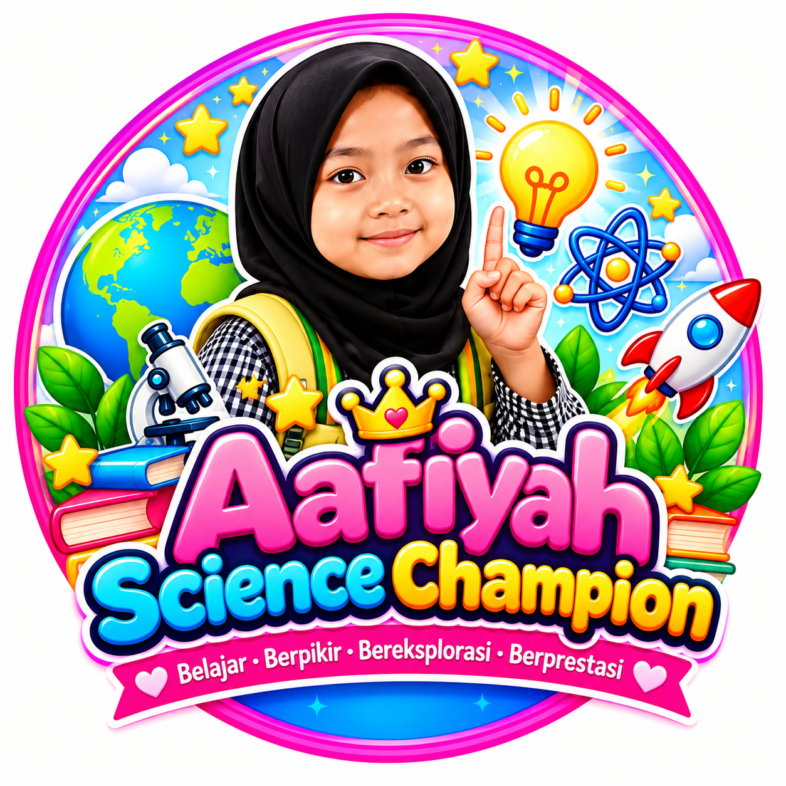
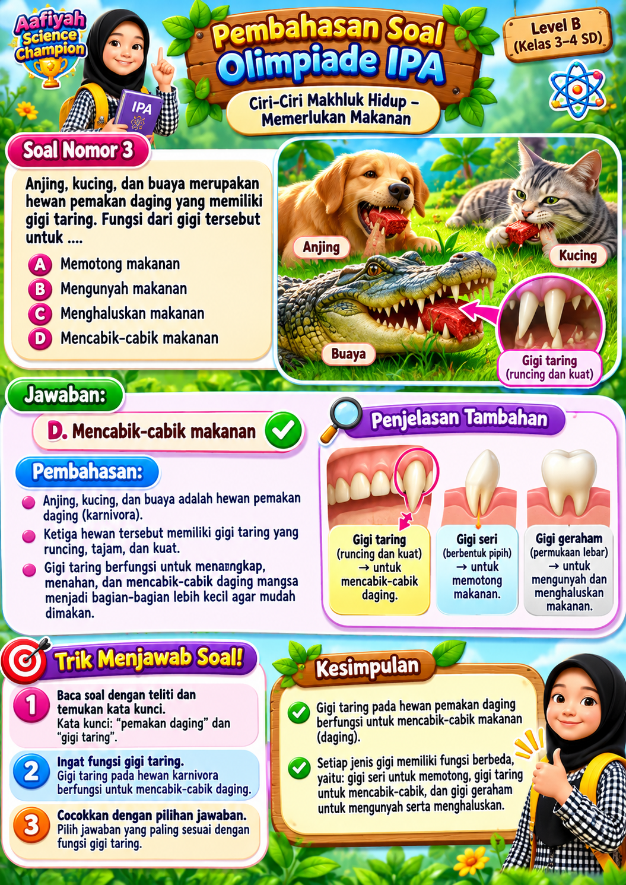

🦷 Pembahasan Soal 03
Belajar • Berpikir • Bereksplorasi • Berprestasi
📝 Soal Nomor 3
Anjing, kucing, dan buaya merupakan hewan pemakan daging yang memiliki gigi taring. Fungsi dari gigi tersebut untuk ....
- Memotong makanan
- Mengunyah makanan
- Menghaluskan makanan
- Mencabik-cabik makanan
✅ Kunci jawaban: D. Mencabik-cabik makanan
🔎 Infografis Pembahasan

💡 Mengapa jawabannya D?
- Anjing, kucing, dan buaya mempunyai gigi taring yang runcing dan kuat.
- Bentuk runcing membantu gigi mencengkeram dan merobek makanan atau mangsa.
- Karena pertanyaan menanyakan fungsi gigi taring, pilihan yang paling sesuai adalah mencabik-cabik makanan.
Mengapa pilihan lain kurang tepat?
- A. Memotong: fungsi yang terutama dikaitkan dengan gigi seri.
- B. Mengunyah: proses ini melibatkan gerakan rahang dan beberapa jenis gigi.
- C. Menghaluskan: permukaan lebar gigi geraham membantu menghancurkan dan menghaluskan makanan.
🏆 Trik Menjawab Soal Olimpiade
- Temukan kata kunci: gigi taring.
- Bayangkan cirinya: runcing dan kuat.
- Hubungkan bentuk dengan fungsi: mencengkeram dan merobek.
- Pilih jawaban yang paling sesuai, bukan sekadar pilihan yang terdengar ilmiah.
Jebakan Olimpiade! Jangan tertukar antara gigi seri untuk memotong, gigi taring untuk mencengkeram/merobek, dan gigi geraham untuk mengunyah serta menghaluskan.